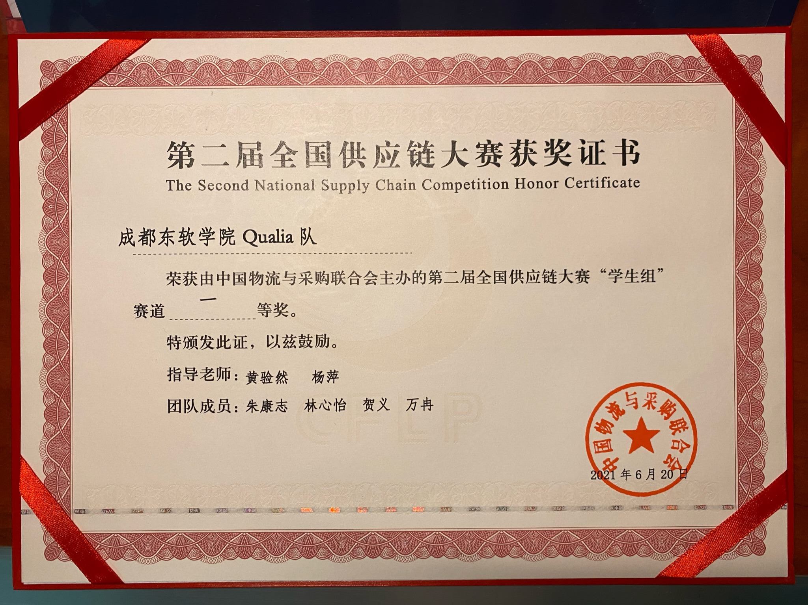

初赛
初赛共两场，均为“供应链运营实战”赛项。参赛人员使用比赛账号登录指定的大赛平台，模拟运营一家虚拟企业的供应链全过程；本科组和高职组为团队赛，模拟运营周期为一年，大赛以平台设置的虚拟起始日期为准，每30秒前进一天；参赛人员在大赛发布后可进行融资贷款、市场竞标、工厂选址、生产管理、产能升级、品质提升、供应商协议签订、原料采购、仓储管理、配送管理等环节的操作。大赛开始前，参赛人员有15分钟运营规划时间，主要进行市场分析、客户分析、供应商分析、区域配套分析等，确定供应链运营整体思路。大赛过程中每个季度为一个阶段，每个阶段结束后暂停10分钟，所有阶段完成后，系统自动根据各项指标进行评分。
复赛
复赛内容为“供应链规划实战”赛项。该赛项为个人赛，所有参赛人员使用比赛账号登录大赛平台，依据大赛平台提供的市场需求信息、生产信息、供应商信息、物流信息等相关背景资料，围绕需求预测、采购管理、生产管理、物流管理等主要内容进行供应链规划设计，并将规划内容在大赛平台中做好对应的设置并模拟执行，最终系统自动根据各项指标进行评分。
决赛
参赛团队根据大赛组委会提供的案例数据，依据供应链管理理论进行案例分析。
根据竞赛系统的案例背景，5G 基站建设供应链的主要组成部分可分为供应商体系、生产制造公司、客户体系 3 个部分。供应链贯穿原材料及零部件的生产、储备、供应，以及 10 家生产企业针对全国客户需求的采购、生产、销售、配送等环节。查看全部内容
供应链设计作品在全国供应链大赛中获得决赛一等奖。
